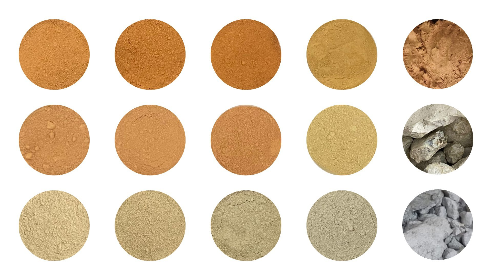

MSc thesis · Şile clays K1, K4, K5 · Istanbul
Each row shows one clay across its full processing sequence. Reading right to left: raw ungrinded chunks straight from source, then ground raw, then ground & calcined at 600, 700, and 800 °C. Color shifts visibly with calcination as iron oxides dehydrate and re-oxidize.

All three target venues with submission deadlines, event dates, official templates, and direct submission links.
ITU, Süleyman Demirel Cultural Center · Istanbul, Turkey
✓ Already contributed 2 articles. Presenting at IGRS fulfills ITU's international conference requirement for MSc graduation.
Karadeniz Technical University · Trabzon, Turkey
Topic fit: Building Materials. Planned submission: activator screening (Stage 2). Send abstracts/papers to ace2026@ktu.edu.tr.
ITU Ayazağa Campus, Süleyman Demirel Cultural Center · Istanbul, Turkey
Planned submission: clay mineral analysis + SAI. Theme: "The place of clay in future technology." Submit via website or info@kilsempozyumu2026.org. Note: Kumsan Döküm (your K1 source) is a bronze sponsor — useful context for the materials discussion and possible networking opportunity.
Stage 1 (SAI screening) determines optimum calcination temperature per clay. Stage 2 (activator screening on K4 at 700 °C) determines the activator and dosage. Both feed Stage 3, the final geopolymer mixtures.
Every test mapped to its target sample group and current status.
| Test / measurement | Stage | Sample group | Details | Status |
|---|---|---|---|---|
| XRD (mineralogy) | Raw | 5 clays initially | Used to drop K2, K3 | Done |
| XRF (chemistry) | Raw | 5 clays initially | Used to drop K2, K3 | Done |
| TGA | Raw | K1, K4, K5 raw | Set 600 / 700 / 800 °C window | Done |
| SEM | Raw S1 S3 | Raw + calcined; post sulfate & freeze–thaw | Microstructure of clays and degraded geopolymers | Pending raw · S3 planned |
| PSD | Raw | Raw + calcined clays | Particle size distribution | Pending |
| Flexural strength | S1 S2 S3 | SAI mortars (raw + 3 temps); activator pastes; final geopolymers | S1: 2/7/28/90 d · S2: 7/14/28 d · S3: durability tracking | S1/S2 done · S3 planned |
| Compressive strength | S1 S2 S3 | SAI mortars (raw + 3 temps); activator pastes; final geopolymers | Same schedule as flexural; SAI uses 75% benchmark | S1/S2 done · S3 planned |
| Capillary water absorption | S1 S3 | SAI 28 d & 90 d; 1 final mold | 4 h uptake + 5 day uptake | S1 done · S3 planned |
| Total water absorption | S1 S3 | SAI 28 d & 90 d; 1 final mold | 5 day immersion | S1 done · S3 planned |
| Sodium sulfate attack | S1 S3 | SAI samples; 1 final mold | Δ weight tracked + 56 day final strength · SEM after | S1 done · S3 planned |
| Freeze–thaw cycles | S1 S3 | SAI 90 d samples; 1 final mold | UPV + Δ weight tracking · SEM after (S3) | S1 in progress · S3 planned |
| Wetting–drying cycles | S3 | 1 mold per mixture | UPV + Δ weight + strength | Planned |
| UPV | S1 S3 | SAI 90 d freeze–thaw; all S3 durability molds | Non-destructive damage monitoring | S1 in progress · S3 planned |
| MIP | S3 | Selected final mixtures | Pore structure — possibly at end | Optional |
Compressive strength (MPa) of 20% clay + 80% OPC mortar prisms at 2, 7, 28 and 90 days, with water-to-cement ratio. C1 and C2 are plain OPC references.
| ID | Prism | 2 d | 7 d | 28 d | 90 d | W/C |
|---|
Flexural (bending) strength (MPa) of the same prism set at 2, 7, 28 and 90 days.
| ID | Prism | 2 d | 7 d | 28 d | 90 d |
|---|
SAI = (sample strength / C1 strength at the same age) × 100, computed separately for compressive and flexural strength. The dashed red line marks the 75% ASTM C618 threshold. C1 is the sole reference; C2 is excluded.
5-day immersion test (Stage 1 durability). Samples cured to 28 and 90 days before immersion. Raw clay blends absorb 2–3× more than calcined equivalents. Most calcined blends improve from 28 to 90 days as OPC hydration continues. C1 (plain cement) 90-day result is pending curing completion.
| C1 | K10 | K40 | K50 | K16 | K17 | K18 | K46 | K47 | K48 | K56 | K57 | K58 | |
|---|---|---|---|---|---|---|---|---|---|---|---|---|---|
| 28 days | 5.30% | 11.14% | 12.54% | 12.78% | 5.83% | 5.87% | 6.64% | 7.10% | 6.72% | 7.30% | 5.17% | 4.87% | 5.12% |
| 90 days | pending | 6.50% | 7.40% | 7.47% | 4.34% | 4.34% | 4.42% | 5.24% | 4.83% | 4.75% | 5.04% | 4.84% | 4.81% |
Sorptivity coefficient (mm/min⁰·⁵) measured at 28 and 90 days of curing. Lower values indicate a denser, less permeable matrix. C1 and C2 are OPC reference mixes tested at 28 days only. Raw clay blends (K10/K40/K50) absorb roughly 2× more than calcined equivalents. The K1 series at 600 °C (K16) achieves the lowest 90-day value across all samples.
| Sample | 28-day (mm/min⁰·⁵) | 90-day (mm/min⁰·⁵) | Change |
|---|
Stage 1 durability test: SAI samples immersed in 5% Na₂SO₄ solution. Mass tracked weekly for 56 days. Each line is the average of two replicate prisms. Lines stop where measurements have not yet been taken. Mass gain = sulfate ingress and ettringite/gypsum formation; mass loss = matrix degradation and spalling.